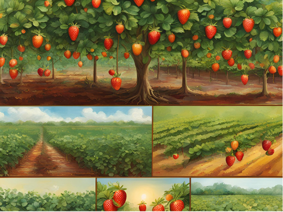
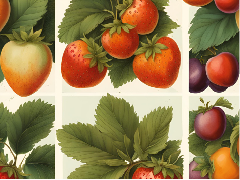

Somos uma empresa familiar, há mais de 20 anos no mercado. Trabalhamos com compotas, tortas e bolos de frutas produzidas em nossa fazenda.
Telefone para contato: (43) 3552-1508.
E-mail: docetradicao@hotmail.com


Em nossa fazenda produzimos maçãs, laranjas, amoras, ameixas, figos, morangos e abóboras. Totalmente livres de agrotóxicos e doces 100% artesanais.